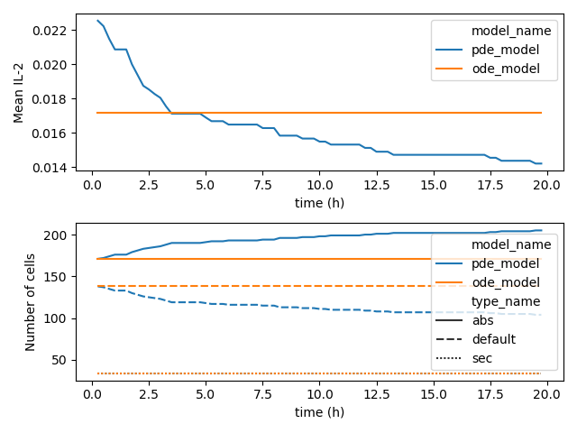

Cell behavior with InternalSolver¶
Cell behavior can be implemented as arbirtray python code by subclassing from InternalSolver and
adding the type to the simulation.
The ABC InternalSolver defines two abstract methods on_type_change()
and step(), which must be implemented in every subclass.
The custom behavior implemented inside the step() method.
It has access to the timepoints between which to solve (t1 and t2), the ParameterSet instance attached to
the cell (entity) and a reference to the Entity instance.
Note
The later is a bit of a hold over and may be removed at some point.
1 2 3 4 5 6 7 8 9 | class SimpleThresholdSolver(InternalSolver):
name = "SimpleThresholdSolver"
def on_type_change(self, p, replicat_index, entity=None):
pass
def step(self, t1, t2, dt, p, entity=None, **kwargs):
...
return p
|
Parameters can be retrived from the parameter set. This includes :
The coupling properties defined by
GlobalProbleminstance in the simulation (il2_surf_c,…)Parameters, which were set during a previous call to
step()The parameters derived from the scenario.
1 2 3 4 5 6 7 8 9 | def step(self, t1, t2, dt, p, entity=None, **kwargs):
"""Retrieves the number of IL-2R molecules on this cell"""
il2_threshold = p.get_physical_parameter("R", "IL-2").get_in_post_unit()
"""Retrieves the IL-2 surface concentration (coupling property) from last iteration"""
il2 = p.get_physical_parameter("surf_c", "IL-2").get_in_post_unit()
return p
|
A complete example is given below. It uses the box_gird.py scenario so the model parameters are defined in parameters.py. The starting cells can become either responder cell (abs) or secreting cells (sec) depending on the IL-2 concentration on their surface. The overall differentiation is modelled as a Poisson process.
As the example takes a few minutes run you might want to run the plotting code separately.
1 2 3 4 5 6 7 8 9 10 11 12 13 14 15 16 17 18 19 20 21 22 23 24 25 26 27 28 29 30 31 32 33 34 35 36 37 38 39 40 41 42 43 44 45 46 47 48 49 50 51 52 53 54 55 56 57 58 59 60 61 62 63 64 65 66 67 68 69 70 71 72 73 74 75 76 77 78 79 80 81 82 83 84 85 86 87 88 89 90 91 92 93 94 | import logging
import os
import matplotlib.pyplot as plt
import numpy as np
import pandas as pd
import seaborn as sns
from scipy.stats import poisson
from parameters import cytokines, cell_types_dict, geometry, numeric, boundary
from thesis.main.InternalSolver import InternalSolver
from thesis.main.PostProcess import PostProcessor
from thesis.main.StateManager import StateManager
from thesis.scenarios.box_grid import setup, assign_fractions
"""Define paths for result folder structure"""
solution_path = "/extra/kiwitz/cell_behavior_example/test_1/"
os.makedirs(solution_path, exist_ok=True)
logging.basicConfig(
filename=os.path.join(solution_path, "sim.log"),
level=logging.INFO,
filemode="w",
format='%(levelname)s::%(asctime)s %(message)s',
datefmt='%I:%M:%S')
class SimpleThresholdSolver(InternalSolver):
name = "SimpleThresholdSolver"
def on_type_change(self, p, replicat_index, entity=None):
pass
def step(self, t1, t2, dt, p, entity=None, **kwargs):
il2_threshold = p.get_physical_parameter("ths", "IL-2").get_in_post_unit()
il2 = p.get_physical_parameter("surf_c", "IL-2").get_in_post_unit()
if entity.type_name == "default" and np.random.uniform(0, 1) > poisson.cdf(k=1, mu=0.25):
if 2 * il2_threshold < il2:
entity.change_type = "abs"
elif 0.5 * il2_threshold > il2:
entity.change_type = "sec"
return p
"""Simulation"""
scenario = setup(
cytokines,
cell_types_dict,
boundary,
geometry,
numeric)
stMan = StateManager(solution_path)
scenario.internal_solvers.append(SimpleThresholdSolver)
stMan.scenario = scenario
t_unit = 3600
stMan.T = np.arange(0, 20 * t_unit, t_unit / 4)
def pre_scan(state_manager, scan_index):
assign_fractions(state_manager.sim_container, 0)
stMan.pre_scan = pre_scan
stMan.run()
"""Post Processing"""
pp = PostProcessor(solution_path)
pp.unit_length_exponent = -6
pp.run_post_process(4)
"""Plotting"""
global_df = pd.read_hdf(os.path.join(solution_path, "global_df.h5"))
cell_df = pd.read_hdf(os.path.join(solution_path, "cell_df.h5"))
global_df.time = global_df.time / 3600
cell_df.time = cell_df.time / 3600
fig, ax = plt.subplots(2, 1)
sns.lineplot(x="time", y="Concentration", hue="model_name", data=global_df, ax=ax[0])
sns.lineplot(x="time", y="id", hue="model_name", style="type_name",
data=cell_df.groupby(
["time", "time_index", "model_index", "model_name", "type_name"]).count().reset_index(),
ax=ax[1]
)
ax[0].set_xlabel("time (h)")
ax[0].set_ylabel("Mean IL-2")
ax[1].set_xlabel("time (h)")
ax[1].set_ylabel("Number of cells")
plt.tight_layout()
plt.savefig(os.path.join(solution_path, "plot.pdf"))
plt.show()
|
The result should look like this
